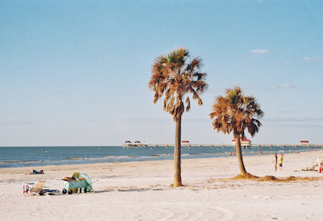
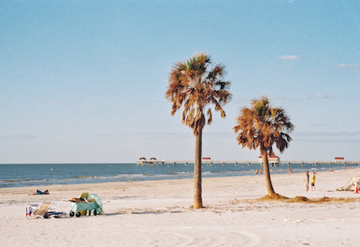

440 Handan Rd., Shanghai, China
Zip code: 200433
xingyulan96(at)gmail.com
Xingyu Lan ✨ 蓝星宇
Researching in 📊 data visualization, 🖊 visual storytelling, 🖥️ user experience, 🤖 AI for social good.
Welcome and thank you for visiting my site! I'm currently an assistant professor affiliated with School of Journalism at Fudan University, Shanghai, China. I'm also the co-advisor of Intelligent Big Data Visualization Lab (iDVX Lab) and FDU-VIS. I do interdisciplinary research in communication, computer science, and design, and seek to explore how data is encoded, disseminated, and consumed in the era of digitalization and artificial intelligence.
I received my PhD in Design at iDVX Lab, College of Design and Innovation, Tongji University, supervised by Prof. Nan Cao. I received my Master’s degree in Journalism and Communication and a minor in Finance from Peking University HSBC Business School. I received my Bachelor’s degree in Sociology from the Department of Sociology at Peking University and a double degree in Chinese Language and Literature from the Department of Chinese.
I am a writer / designer / developer in my spare time. I won prizes in competitions such as the National Data Journalism Competition, China DataViz Competition, PacificVis Storytelling Contest, China Digital Humanities Open Data Contest, and Huawei Data Analyst Competition.
⭐ I am looking for highly motivated students and research interns! 招收硕士生及暑期/日常学生科研，有意请联系邮箱
Teaching:
Service:
News & Travels
Xingyu Lan, Yifan Wang, Lingyu Peng, Xiaofan Ma
Proceedings of the IEEE Pacific Visualization Conference (PacificVis 2025). 🏆 Best Paper Award
Paper: Link | Material: Website
Yang Shi, Yechun Peng, Jieying Ding, Xingyu Lan, Nan Cao
Proceedings of the ACM on Human-Computer Interaction (CSCW 2025)
Paper: Link
Xingyu Lan
EuroVis Education Paper (EuroVis 2025)
Paper: Link
Wenyue Huang, Xingyu Lan
ChinaVis 2025 Conference
Paper: Link
Shixiong Cao, Xingyu Lan, Yuqi Liu, Qing Chen, Nan Cao
Communications in Information and Systems
Paper: Link
Xingyu Lan
电子工业出版社，2023年3月
本书介绍: Link ｜ 京东/当当/天猫在售
Xingyu Lan, Jiazhe Wang
《美术大观》2022年第3期
Paper: Link | Material: Relevant Project - AntV AVA, Relevant Project - Gradict
Leni Yang, Xian Xu, Xingyu Lan, Ziyan Liu, Shunan Guo, Yang Shi, Huamin Qu, Nan Cao
IEEE Transactions on Visualization and Computer Graphics (VIS 2021)
Paper: Link | Material: Website, Video Preview, Video Presentation
Xingyu Lan, Xinyue Xu, Nan Cao
In Proceedings of the SIGCHI Conference on Human Factors in Computing Systems (CHI 2021)
Paper: Link | Material: Study Data, Video Presentation
Yang Shi, Xingyu Lan, Jingwen Li, Zhaorui Li, Nan Cao
In Proceedings of the SIGCHI Conference on Human Factors in Computing Systems (CHI 2021)
Paper: Link | Material: Website, Video Preview, Video Presentation
Nan Cao, Danqing Shi, Yanqiu Wu, Xinyue Xu, Fuling Sun, Yi Guo, Nan Chen, Mengdi Sun, Xingyu Lan, Pei Liu, Siji Chen, Ligan Cai, Yang Shi, Qing Chen
ChinaVis Poster 2021 | 🏆 Honorable Mention
Poster: Link | Material: Website
Xingyu Lan, Yang Shi, Yanqiu Wu, Xiaohan Jiao, Nan Cao
IEEE Transactions on Visualization and Computer Graphics (VIS 2021)
Paper: Link | Material: Website, Video Preview, Video Presentation

Xingyu Lan, Yanqiu Wu, Yang Shi, Qing Chen, Nan Cao
In Proceedings of the SIGCHI Conference on Human Factors in Computing Systems (CHI 2022)
Paper: Link | Material: Website, Video Preview, Video Presentation
Xingyu Lan, Yang Shi, Yueyao Zhang, Nan Cao
IEEE Transactions on Visualization and Computer Graphics (IEEE PacificVis 2021)
Paper: Link | Material: Website, Video Presentation
Xingyu Lan, Yanqiu Wu, Qing Chen, Nan Cao
arXiv preprint arXiv:2211.03296
Paper: Link | Material: Study Data
Xingyu Lan, Jiaxi An, Yisu Guo, Chiyou Tong, Xintong Cai, Jun Zhang
In Proceedings of the SIGCHI Conference on Human Factors in Computing Systems (CHI 2025 LBW)
Paper: Link
Yifan Li, Xingyu Lan
National Communication Association Annual Convention (NCA 2025)
Paper: to appear
Yu Zhou, Xingyu Lan
National Communication Association Annual Convention (NCA 2025)
Paper: to appear
Qiufang Yu, Xingyu Lan
Proceedings of the International Symposium of Chinese CHI (ChineseCHI 2024)
Paper: Link
Xueyang Wang, Lingjie Pan, Xingyu Lan
Proceedings of the International Conference on Human-Computer Interaction
Paper: Link
Narrative Chart is an open-source visualization library specialized for authoring charts that facilitate data storytelling with a high-level action-driven grammar. The library is implemented in JavaScript and compatible with most modern web browsers.
纳图是由同济大学智能大数据可视化实验室设计开发的一款专门用于支持"叙事图表"创作的数据可视化图表库。与已有的图表库相比，Narrative Chart 将可视化的创作过程分解成独立的设计行为，并实现了数据标注、动效、装饰等一系列核心操作。利用 Narrative Chart ，开发者、设计师、分析师，甚至是有作图需求的大众用户，都可以通过直观易懂的语法创作出丰富的图表效果。
Calliope is a visual data story generation platform that employs advanced AI techniques to automatically analyze data and represent data insights in the form of narrative visualization.
Calliope 是一款由同济大学智能大数据可视化实验室研发的智能数据可视化内容生成平台，可以帮助用户快速生成、创建、编辑和分享各种形式的数据可视化内容。用户只需拖拽上传数据，即可自动生成相应的可视化内容。平台提供了多种可视化图表及排版方式，适用于各种应用场合，轻轻一点即可将所生成的可视化内容分享给好友或合作方。
The first Chinese visualization "dictionary" that introduces data visualizations in a systematic manner, including chart definitions, designs, suggested applications, and tool tutorials (e.g., Excel, Python, Illustrator).
图之典中文图表社区，由一群热爱可视化的小伙伴开发运营，致力于介绍可视化图表及其应用场景。我们对常见图表进行了整理归类，并详细总结了图表的正确用法，如数据类型、适用场景、不适用场景等。同时，我们还搜集了许多有趣的图表设计作品和图表教程，帮助大家制作出高效、美观的可视化。
This project mined the diary written by John Rabe during the Nanjing Massacre(1937-1938), a valuable historical document that proves the atrocities committed by the invading Japanese army against Chinese people during World War II. *The language of this project is Chinese.
该项目针对二战珍贵史料《拉贝日记》中记录的《日本士兵在南京安全区的暴行》进行了文本挖掘，通过自然语言处理、统计分析、数据可视化等技术，对拉贝笔下的、南京大屠杀期间的日军暴行进行了深入探索。惨遭抢劫的民舍、被无端蹂躏的妇女、无情的枪口与刺刀……数据从历史中跃出，提醒今人那是一个个曾存在过的鲜活生命。
Investigating China's private hospitals & Putian families. *The language of this project is Chinese.
2014年，大学生魏则西之死牵出了百度的医疗广告竞价机制，以及借助此机制而不断壮大的莆田系医院。一时，莆田系的"罪恶"起家史、四大家族控制了70%中国民营医院的传说席卷网络。然而，最为当事人的莆田系医院却鲜少发声、几乎隐身。为了揭开莆田系医院的神秘面纱，我们从一份名单开始，步步挖掘莆田系医院的资本势力和交织在股权中的家族关系。
Series report of China's private hospitals & Putian families. *The language of this project is English.
《莆田医网》姊妹篇。该项目主要从时间维度，关注三大莆田系集团是如何进化的。如果说《莆田医网》是横向地刻画了莆田系医院的资本版图，那么《莆田医路》则是纵向剖析了这些资本集团的嬗变趋势：有人通过大量开设实体医院而扩张，有人通过勾连境外资本而扩张，还有人通过上市和并购扩张……不同的扩张路径背后，是莆田系日益趋于多元化的事实。
Understanding the modernization of Shanghai through the history of its roads. *The language of this project is Chinese.
观察城市，道路无疑是一个很好的切入点。上海道路的一个有趣之处在于，大都以省份、城市名称为名，且道路的修筑、命名本身就是现代化的结果。为了一探究竟，我们深入上海路史，从道路这一小切口，探究上海如何从一个传统的中国小县城，演变为华洋杂处的殖民地、卷入现代化浪潮，并最终成为享誉世界的现代都市。
Investigating the business network of Fan Bingbing, a famous actresses in China. *The language of this project is Chinese.
2018年，著名影星范冰冰因"阴阳合同"陷入税务风波，并被罚款8亿余元，震惊全国。明星在经济金融领域的操盘行为，亦受到公众关注。事件爆出后，我们立即对范冰冰的公司版图、及其关联的明星投资圈进行了挖掘。结果发现，范冰冰并非个例，甚至并非称得上资本大玩家。诸多明星的商业布局已相当成熟，且与大型互联网企业、财团、风投机构等有密切联系。该项目于当年发布后即登上百度搜索首页。
Dream of the Red Chamber (Honglou Meng) is a novel written in 1760s and is one of the Four Great Classical Novels of Chinese literature. This project analyzed the color palettes in this novel and revealed their rich connotations. *The language of this project is Chinese.
最为四大名著之一，《红楼梦》在写作上的深邃韵味堪称无双。有趣的是，曹雪芹在小说中使用了诸多的色彩描述，而这些色彩似乎又与小说的情节起伏、人物性格暗合。受此启发，我们对87版《红楼梦》电视剧进行了抽帧分析。从元妃省亲的"红"，到结局的"白茫茫一片真干净"，贾府的兴衰荣枯，亦在色彩的流变之中。
主流化+数字化+国际化：新闻学院教学改革出实招 // 2025.5 复旦官微报道
“新文科”聚焦社会议题 复旦学子用信息技术构建心中的家与城 // 2025.1 《新民晚报》报道
让“数据新闻与信息可视化”赋能学科创新发展 // 2024.8 《光明日报》& 新华社报道
Personal Stories 个人故事：
“书院导师院长奖”导师访谈丨别在尝试之前就给自己设限 // 2025.4 复旦大学书院采访
强国路上复旦青年丨她，致力于打通大数据的最后一公里 // 2024.9 复旦大学团委 &《中国青年报》采访
那些社会学系教给我的事 // 2024.5 北京大学采访
数据新闻十年访谈录 | 蓝星宇、梁银妍：用数据开启“文科生”跨界之旅 // 2022.3 中国传媒大学采访
“中国数据可视化大赛”创作者专访：数据“几人行” // 2019.6 香港DNN Society采访
Innovators in Data Journalism: An Interview with Lan Xingyu // 2018.8 中美教育基金会采访
围观“黑科技”：数据可视化学术圈最新成果速递 // 国际顶级人机交互大会最新可视化论文总结
年度盘点：信息可视化领域8大趋势 // 年底来盘点一下看过的paper
数据新闻获奖作品大赏 // 年终系列推送：数据新闻篇、艺术设计篇、分析挖掘篇
信息之美作品详解：数据故事有哪些新玩法？ // 一年一度的信息之美大赛揭晓了入围短名单，许多作品可圈可点
Design Observations 设计解读:
超酷！那些惊艳百年的数据可视化“神图” // 考古那些历久弥新的可视化设计
美国大选观察：新闻媒体的图表大混战 // 美国大选是各大新闻媒体进行可视化battle的重要战场，今年的设计也可谓是眼花缭乱
给历史文化以新生：漫谈数字人文 // 对于人文学科的研究来说，“数字化”、“视觉化”是一个新颖而有效的视角
疫情下的可视化观察（2）：历史深处的共鸣 // 在人类的历史长河中，瘟疫屡见不鲜，而用可视化来展示瘟疫信息的手法也源远流长
疫情下的可视化观察 // 疫情爆发之后，可视化在全球范围内得到了广泛应用，出圈效果明显
那些我遭遇过的可视化“泥石流” // ChinaVis 2022 可视化吐槽特别专题
关于可视化“泥石流”的再思考 // ChinaVis 2023 可视化吐槽特别专题
数据可视化吐槽大会 // 澎湃新闻活动
Study Resources 学习推荐:
学习数据可视化，读哪本书比较好？ // 书山有路勤为径，选一本书开始你的可视化之旅吧！
《用数据讲故事》入门 // B站线上慕课
全球调查记者大会归来，我们收获了哪些数据神器？ // 调查记者必备工具整理，首尔大会参会笔记（更新于2018年）
哥大老师的数据分析和可视化锦囊 // 北大数字媒介Workshop内容总结（更新于2017年）
Public Issues 公共议题:
请回答2023:几组可视化回顾变动之年 // 即使放在人类整个历史上看，2023年也是值得被记录的一年
奥运奖牌榜，到底应该怎么排？ // 不同的排名方式，传达出来的信息也是不同的
理解人口结构：人口金字塔40年变迁 // 三胎政策来了，如何理解我国的人口结构
黑色幽默十六则：新冠下的国际众生相 // 于新冠全球确诊量突破500万之际，看人类社会的脆弱与荒诞
 
